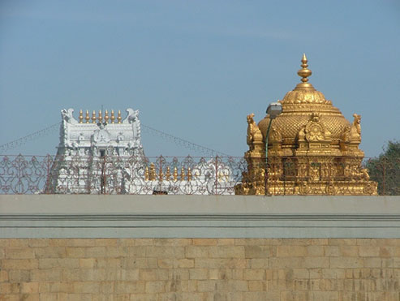
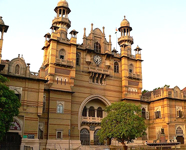

Please check the information below on how to get to the wedding or/and
the reception destinations respectively:

TIRUPATI is in Chittoor district of Andhra Pradesh, India.
It is most famous for its Sri Venkateswara Temple dedicated to Vishnu, also known as Balaji in North India and Govinda in South India.
The temple is located on top of Tirumala hills, while the town Tirupati is located on the foothills.
GETTING THERE:
By plane
There are many flights to Tirupati via Hyderabad and Mumbai.
By train
Tirupati is a major junction in South Central Railways. Indian Railways operates direct trains from near by metro cities - Bangalore, Chennai, Hyderabad and other major Railway stations to Tirupati.
Trains can be boarded at nearby cities - Renigunta (10 km from Tirupati) and Gudur (100 km) as well.
Frequent bus service is available between Tirupati, Renigunta and Gudur.
Train schedules can be found at the Indian Railways website and tickets can be booked online at Indian Railways Catering and Tourism Corporation (IRCTC) webpage.
By Road
National Highway NH 205 passes through Renigunta and hence is accessible from Chennai (3-4hrs), Bangalore (5+ hours), Hyderabad (10-12 hours) and other nearby cities.
Andhra Pradesh State Road Transport Corporation (APSRTC) - from Hyderabad or from within Andhra Pradesh
Tamil Nadu State Express Transport Corporation (SETC) - from Chennai
Karnataka State Road Transport Coroporation (KSRTC) - from Bangalore

VADODARA a town in Gujarat in India, also known as Baroda, is named for the Vad (banyan) trees that flourish in the area.
It is the site of the Lakshmi Vilas Palace belonging to the royal Gaekwad dynasty of the Marathas.
It is also the home of the Maharaja Sayajirao University of Baroda, which is the largest university in Gujarat.
Major industries include petrochemicals, engineering,Chemicals, pharmaceuticals, plastics and Forex.
GETTING THERE:
By plane
Vadodara's airport, also called Civil Airport Harni currently operates domestic flights only. Airlines like Air India, Jet Airways and Indigo operates direct flights to and from Delhi and Mumbai.
By train
The Vadodara Junction Railway Station (Indian Railways station code: BRC) is the busiest Railway Station in Gujarat.
It is situated on the Mumbai - Delhi Western Railway Main Line. You can get premium trains like Shatabdi and Rajdhani from Vadodara towards Delhi and Mumbai.
Train schedules can be found at the Indian Railways website and tickets can be booked online at Indian Railways Catering and Tourism Corporation (IRCTC) webpage
By Road
The National Highway no.8 passes through Baroda. It is connected by excellent roads. There is an express highway to Ahmedabad, and highway travel is fairly speedy by road, at least to other places in the western part of the country.
Its going to be a 6 Lane road soon.